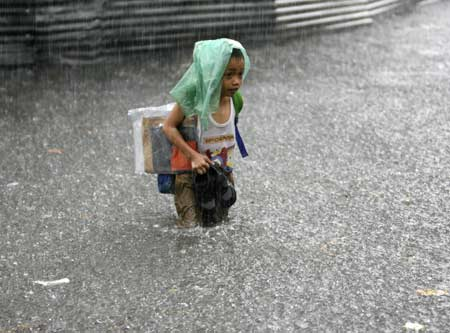

暴雨来临孩子如何自救
突遇暴雨，孩子如何应急自救？
 2012年7月21日，首都北京遭遇特大暴雨，全市的平均降水量达到170毫米，是1951年来有完整气象记录的最大降水量。这场暴雨给自己带来了最沉痛的记忆：因为这次灾难工死亡37人，7人失踪。其中，溺水死亡25人，房屋倒塌致死6人，雷击致死1人，触电死亡5人。
《2012》的场景仿佛就在眼前，尽管我们知道在科幻里面我们不会真的迎来世界末日，可是恶劣的气候却一再给我们敲响警钟。在灾难面前如何自救？当孩子遇到这样的恶劣天气的时候如何冷静处理？我想这些问题我们应该尽快寻找答案，正所谓“亡羊补牢，犹未晚也。”
首先，我们要告诉孩子，当大暴雨来临的时候，哪些地方是危险地带？
· 对城市中的孩子而言，危房里及危房附近，危墙及高墙旁边，洪水淹没的下水道，马路两边的下水井与客井，电线杆及高压线塔附近，化工厂及贮藏危险品的仓库……这些地方都是在暴雨到来后尽快避开的地方。
・ 对生活在农村中的孩子来说，河床、水库及渠道、涵洞，行洪区、围垦区，危房中、危墙下、危房上，电线杆及高压线塔附近……这些地位都是危险地带。
大雨到来，孩子们该注意哪些事项？
・ 不到万不得已时，千万不要轻易下水；
・ 不要在高山和坡谷处避灾；
・ 不可以直接饮用未经处理的地表水。
暴雨时为什么不要在马路两侧行走？
・ 因低洼的地形，马路两侧是最易存水的地方，在积水中不易辨别情况；
・ 两侧埋有下水管线及其他管道，当窖井的盖子丢失时，一旦贸然踏入，就会伤及自身；
・ 马路中央积水中可能存在其他危险，如遇漩涡应绕行，否则会落入窖井中。
如果途中正好遇到大暴雨，来不及转移怎么办？
・ 向高处转移。
・ 身处危房时，要迅速撤离，寻找安全坚固处所，避免落入水中。
・ 除非在水可能冲垮建筑物或水面没过屋顶时被迫撤离，否则呆着别动，等水停止上涨再逃离。
・ 扎制木排等逃生用品，利用通讯设施联系救援。可利用眼镜片、镜子在阳光照射下的反光发出求救信号。
・ 夜晚利用手电筒及火光发出求救信号。
如果被围困在建筑物上怎么办？
・ 被困时，要注意房屋是否有经过洪水浸泡而坍塌的可能。如可能坍塌，马上向安全处转移。
・ 保管好通讯工具，及时与救援部门联系，以取得帮助。
・ 利用燃火、放烟，呼喊及挥动鲜艳衣物等求救方法，以便让搜救人员发现，得到援助。
总之，在灾难面前，首先要冷静，其次要根据实际情况采取应对措施，树立生存观念，坚持就一定能够获救！如果实在不能做什么，原地不动等待水退是最有效的安全措施。
来源：百度知道
|